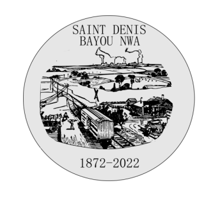

Tramway:
Après plusieurs années de construction et d’investissements financier la ville de Saint Denis à l’honneur devous informer l’ouverture des lignes de tramway. C’est un moyen de transport en commun sur et silencieux et une réelle avancée pour la ville de Saint Denis, le seul présent dans tout le pays.
Le blason a été créé en 1932 par Mr Audam, né en 1904 et décédé en 1935. Mr Audam a décidé de reproduire l’endroit où il vivait. Sa famille présente depuis des générations à Saint Denis a vu évolué la ville au fur et a mesure. Ce jeune artiste a assisté à la construction de la gare puisque sa famille et lui-même vivait près du chemin de fer, il rêvait de pouvoir voyager à bord du train mais est malheureusement décédé avant la fabrication de celui-ci. Après son décès sa jeune sœur a décidé de finir le blason. Sa maison apparait donc sur la peinture, elle est ainsi immortalisée pour toujours. Le blason représente donc Saint Denis, et également un hommage a son créateur.
Ci-dessous, la carte de la ville et les points d'intérêts, accessibles depuis les pictogrammes.

"Étape incontournable sur la route commerciale qui traverse l'Amérique du Nord, Saint Denis est une ville animée et cosmopolite dans laquelle cohabitent hommes d'affaires, mondains, marins et ouvriers."
Voies fluviales:
Notre réseau fluvial est le plus grand du pays, il permet le commerce du sucre, du coton ainsi que diverses marchandises que nous livrons aux villes proches de Saint Denis. Nous possédons également un ferry pour le transport de nos administrés.
Vous pouvez réserver vos billets directement au guichet, ouvert de 7h à 22h30.